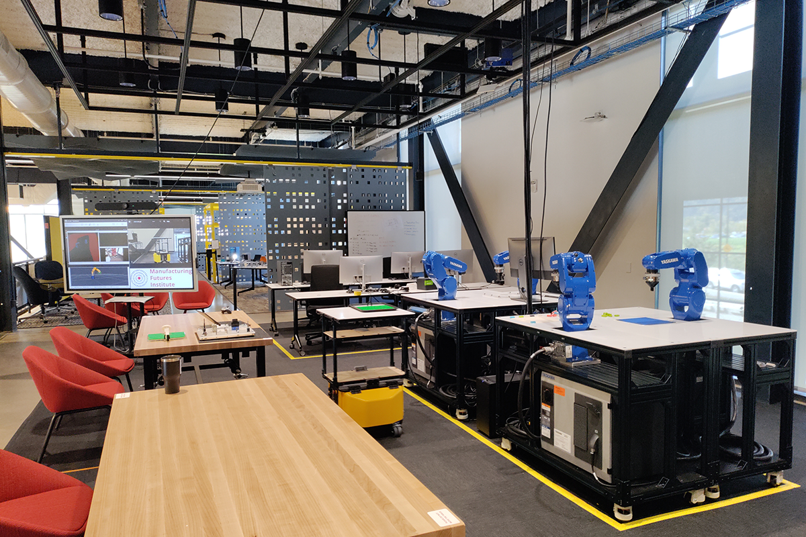
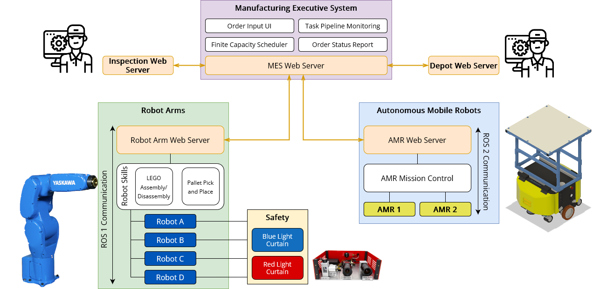

Mezzanine Lab: Assembly/Disassembly

The MFI Mezzanine Lab features an assembly/disassembly testbed, which enables research at the intersection of manufacturing, robotics, and artificial intelligence. This flexible environment is configured to emulate high-mix/low-volume continuous manufacturing. Reconfiguration of equipment and sensors is possible to meet project-specific requirements. Research objectives include advancing AI-based robot planning and manipulation, developing production digital twin technologies, and supporting the orchestration of human labor. The lab aims to create and open-source algorithms relevant to manufacturing and serves as a platform for demonstrating manufacturing concepts to industry.
Projects
Multi-Robot Assembly - 2025
APEX-MR is an asynchronous planning and execution framework that enables multiple robots to safely and efficiently collaborate on complex assembly tasks, such as LEGO construction. By coordinating robot actions under uncertainty, APEX-MR significantly improves task speed and robustness compared to traditional approaches.
More details: https://intelligent-control-lab.github.io/APEX-MR/
Contributors
Philip Huang, Ruixuan Liu, Shobhit Aggarwal, Changliu Liu, Jiaoyang Li
Grounded Task Axes: Zero Shot Skill Generalization - 2025
We present a zero-shot skill transfer method for robots by breaking down tasks into adaptable controllers grounded in object keypoints and axes. Using foundation models to detect similar features, our approach enables robots to generalize skills like screwing, pouring, and scraping to new objects without retraining.
More details: https://iamlab-cmu.github.io/GTA/
Contributors
M. Yunus Seker, Shobhit Aggarwal, Oliver Kroemer
Robot Welding using FANUC robot - 2025
The video demonstrates use of fanuc_ros1 on a welding robot system. The ROS1 package enables communication between a ROS1 system and a FANUC robot controller. The package provides a set of ROS1 services and topics that allow users to control the robot’s movements, read its state, and execute programs. The package also includes a set of tools for simulating the robot’s movements in a virtual environment.
Contributors
Ankit Aggarwal, Scott Kram, Shobhit Aggarwal
Programmable Light Curtains - 2024
Programmable Light Curtains is an inexpensive and flexible real-time safety monitoring system. This system can project tight dynamic safety envelopes that enables fence-less human-robot collaboration, can scale to monitor multiple robots with few sensors, and by utilizing each sensor as a 3D depth sensor the system can also monitor the entire scene within its field of view. We deploy this system in a real testbed environment with four robot arms and demonstrate its capabilities as a powerful safety monitoring solution while being significantly cheaper and not compromising on accuracy.
More Details: https://cmu-mfi.github.io/plc-safety/
Contributors
Karnik Ram, Shobhit Aggarwal, Robert Tamburo, Siddharth Ancha, Srinivasa Narasimhan
High Mix Low Volume Manufacturing Automation - 2023
The video demonstrates an integrated system that includes an MES system, which accepts orders and executes tasks, as well as autonomous mobile robots (AMRs), articulated robot arms, and LEGO assembly/disassembly manipulation skills. End-to-end order execution is automated.

Contributors
Stephen Smith, Zack Rubinstein, Jiaoyang Li, Jingtian Yan, Oliver Kroemer, Kevin Zhang, Changliu Liu, Ruixuan Liu, Siddhant Wadhawa, Vineet Tambe, Sushant Jayanth, Sergi Widjaja, Soham Bhave, Gary Fedder, Rod Heiple, Shobhit Aggarwal